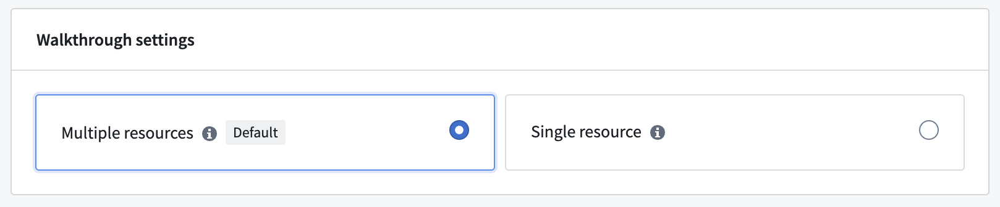
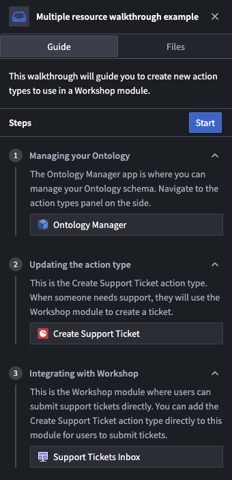
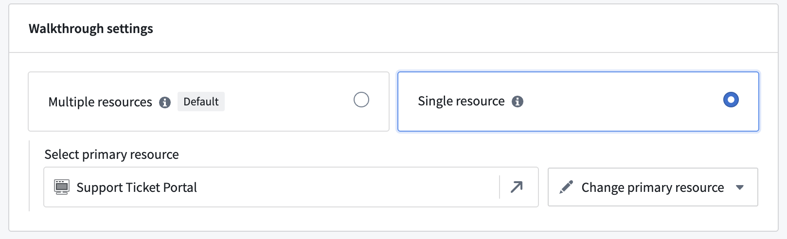
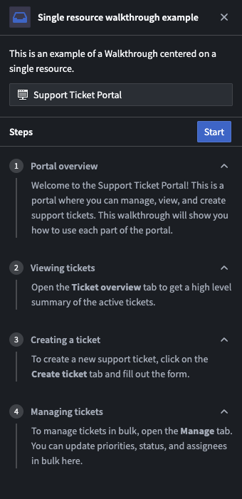

The Walkthroughs application offers two types of walkthroughs to support different onboarding workflows.
In the Walkthrough configuration page, you can switch between the available multiple and single resource Walkthrough types.
:::callout{theme="neutral"} When you switch types, the primary resource for a step may change. After switching, verify that each stepâs primary resource is correct. :::
This is the default walkthrough type. Each step has its own primary resource that can be configured to help navigate users through Foundry.

You should use this type for walkthroughs that have multiple different resources across steps. If there is a primary resource in a step, Walkthroughs will always navigate the user to that resource. For example, if you have a workflow that requires users to create an action type and then edit a Workshop module, you should use a multiple resources walkthrough.

Single resource walkthroughs stay focused on one primary application or resource across all steps, removing repetitive setup and keeping context consistent for users.
You should use this type for walkthroughs or guides that are centered on a single application, Carbon workspace, or other resource.

Single resource walkthroughs have a few key differences in behavior compared with multiple resource walkthroughs:
When switching to single resource walkthroughs, the primary resource of the walkthrough is automatically added as the primary resource of each step.
Although secondary resources are hidden in single resource walkthroughs, you can still use them to configure the primary resource. For example, to highlight Workshop modules within a Carbon workspace, add the modules as secondary resources and configure highlighting on them. When Workshop is open within the Carbon workspace, its widgets will be highlighted. You may also use the secondary resource configuration to configure behavior for iframed resources.

| Feature | Multiple resource type | Single resource type |
|---|---|---|
| Auto-navigation between steps | â | Only with URL suffix |
| Files tab visible | â | â |
| Per-step resources | â | â |
| Best for | Cross-platform workflows | Application-specific training |